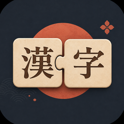

漢字のかけら
かけらを組んで、言葉を作ろう。
「日」＋「寺」＝「時」。バラバラになった漢字の“かけら”を
組み合わせて、言葉を完成させる和風パズルです。1問30秒からの、気軽な脳トレ。
あそびかた
- よみがなと意味をヒントに、かけらをタップして枠にはめるだけ
- むずかしいときは「もどす」「ヒント」でじっくり考えられます
- すきま時間にちょうどいい、1問30秒からの脳トレ
特徴
- やさしい（二字熟語）〜むずかしい（四字熟語）の3レベル、全290問
- クリアで「かけら」を集めて、判子や称号をコレクション
- 桜・富士山・紅葉など、美しい和の背景でゲーム画面を着せ替え